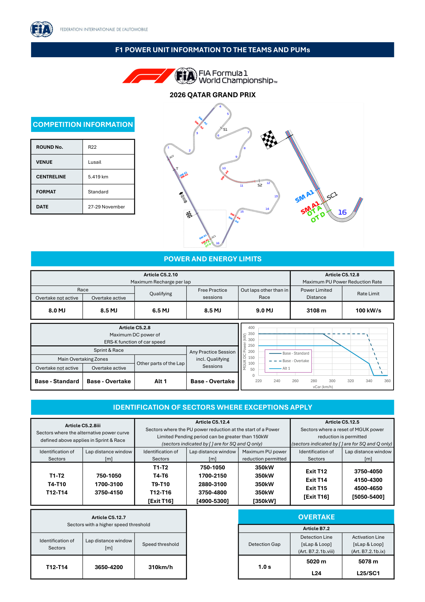

Power Unit & Overtake
The 2026 power unit, active aero and the per-event energy map.
FIA official power-unit documents
Official source; curated transcription may await review. Linked PDFs are the authority. Discovery does not extract or verify numeric values, and does not replace the curated material below.
Last successful FIA document discovery: 2026-11-26T18:34:29.830675+00:00. This is retrieval time, not issue time; newer revisions may exist.
- 2026_qatar_grand_prix_-_power_unit_information.pdf (official PDF)
What changed for 2026
- Roughly a 50/50 split between internal combustion and electrical power.
- The MGU-H is gone; the MGU-K is substantially more powerful.
- 100% sustainable fuel.
- Overtake is a separate electrical-power aid with an event-specific energy allowance defined by the FIA map.
- Active aerodynamics let the cars switch between a high-downforce and a low-drag straight-line mode.
What to look for at this circuit
- Deployment matters most where the full-throttle run is longest — a long lap like this one puts a premium on efficient energy management.
- Energy-rich layouts let drivers deploy more freely; energy-limited ones force lifting and coasting.
- Overtake detection and activation points are defined per circuit in the FIA document.
- The FIA map assigns Base–Overtake to practice and qualifying, while the race uses different curves inside and outside its main Overtake zones; compare the published curves rather than assuming a Sunday speed penalty.
Qatar FIA power-and-energy map
The FIA sheet identifies a 5.419 km lap, standard format and 27–29 November. Under Article C5.2.10, maximum recharge per lap is 8.0 MJ in the race with Overtake inactive, 8.5 MJ in the race with Overtake active, 6.5 MJ in qualifying, 8.5 MJ in free practice and 9.0 MJ on out laps other than in the race. These are recharge limits, not deployment allowances.
Article C5.12.8 sets the power-limited distance at 3,108 m and the maximum reduction rate at 100 kW/s. For Sprint and Race, the map assigns Base–Standard without Overtake and Base–Overtake with Overtake in the main zones, with Alt 1 elsewhere; all practice sessions, including qualifying, use Base–Overtake. This is the FIA's ERS-K power curve, not an active-aero Straight Mode setting.
Alternative-curve windows under C5.2.8iii are T1–T2 (750–1,050 m), T4–T10 (1,700–3,100 m) and T12–T14 (3,750–4,150 m). Under C5.12.4, the 350 kW power-reduction exceptions are T1–T2 (750–1,050 m), T4–T6 (1,700–2,150 m), T9–T10 (2,880–3,100 m) and T12–T16 (3,750–4,800 m); the bracketed Exit T16 window is 4,900–5,300 m. The sheet marks bracketed windows for Sprint Qualifying and Qualifying; Qatar is a standard-format weekend, so they do not add a Sprint session.
Reset windows under C5.12.5 are Exit T12 (3,750–4,050 m), Exit T14 (4,150–4,300 m), Exit T15 (4,450–4,650 m) and bracketed Exit T16 (5,050–5,400 m). The higher-speed threshold under C5.12.7 is 310 km/h at T12–T14 (3,650–4,200 m). Overtake uses a 1.0-second detection gap, with detection at 5,020 m / L24 and activation at 5,078 m / L25/SC1. Distances are lap metres; loop labels are not turn numbers. See the complete map in the FIA source reader below. Original FIA document, page 2.
Official FIA document screenshots
Automatically rendered from the official PDFs. These figures do not update or verify the curated numeric transcriptions above. Unchanged pages already illustrated above are not repeated here.
2026_qatar_grand_prix_-_power_unit_information.pdf
PDF retrieved 2026-11-26T18:34:34+00:00; this is not its issue date.
